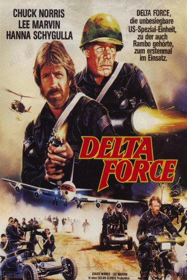

#3614 Delta Force
Alternativ: The Delta Force
 
 IMDB-Wertung: 5.6 / 10
IMDB-Wertung: 5.6 / 10  Metascore: 0
Metascore: 0 
Terroristen unter der Führung von Abdul entführen eine Boeing 707 der American Travelways Airlines (ATW) auf dem Flug 282 von Athen nach Rom. Der Präsident setzt McCoy und dessen Truppe auf Abdul an. Abdul separiert die jüdischen Geiseln und lässt diese bei einem Zwischenstopp in Beirut heimlich von Bord bringen. Auch zwei Soldaten der Navy werden mit abtransportiert, außerdem ein Priester der sich den jüdischen Geiseln anschloss. Gleichzeitig kommen weitere Kämpfer von Abduls Organisation an Bord, was der Delta Force ebenfalls verborgen bleibt, sie gehen weiterhin von zwei Hijackern aus.
Jahr: 1986
Dauer: 129 Minuten
FSK: 16
Land: USA Studio: Cannon Film DistributorsTonspuren:
Untertitel: Deutsch,
Auflösung: 1080p (1920x1080) Größe: 10076 MB
Genre: Action, Thriller, Drama, Abenteuer, Krieg
Regisseur: Menahem Golan
Drehbuch: Stuart Hardy
Soundtrack:
Darsteller:
 Chuck Norris als Maj. Scott McCoy
Chuck Norris als Maj. Scott McCoy Lee Marvin als Col. Nick Alexander
Lee Marvin als Col. Nick Alexander Martin Balsam als Ben Kaplan
Martin Balsam als Ben Kaplan- Joey Bishop als Harry Goldman
 Robert Forster als Abdul
Robert Forster als Abdul Lainie Kazan als Sylvia Goldman
Lainie Kazan als Sylvia Goldman George Kennedy als Father O'Malley
George Kennedy als Father O'Malley Hanna Schygulla als Ingrid
Hanna Schygulla als Ingrid- Susan Strasberg als Debra Levine
 Bo Svenson als Capt. Campbell
Bo Svenson als Capt. Campbell Robert Vaughn als Gen. Woodbridge
Robert Vaughn als Gen. Woodbridge Shelley Winters als Edie Kaplan
Shelley Winters als Edie Kaplan Steve James als Bobby
Steve James als Bobby- Kim Delaney als Sister Mary
- Natalie Roth als Ellen Levine
- Eric Norris als Andy
- Caroline Langford als Sally Fraser
- Assi Dayan als Raffi Amir
- David Leshnik als TV announcer
 Liam Neeson als Delta Force Member , uncredited
Liam Neeson als Delta Force Member , uncredited- William Wallace als Pete Peterson
- Charles Grant als Tom Hale
- Jerry Weinstock als Dr. Jack
- Marvin Freedman als Dave Hoskins
- Bob Levit als Jim Montgomery
- Chelli Goldberg als Tina
- Chris Ellia als Lesley
- Jerry Lazarus als Robert Levine
- Jerry Hyman als Ted Bilicki
- Gael Lehrer als Rosalee Bilicki
- Hank Leininger als Jay Bilicki
- Howard Jackson als Ed
- Zipora Peled als Sister Ann
- Aaron Kaplan als Mike Fraser
- Yehuda Efroni als David Rosovsky
- David Menachem als Mustafa
- Shaike Ophir als Father Nicholas
- Avi Loziah als Jaffer
 Uri Gavriel als George Berri
Uri Gavriel als George Berri- Panos Nicolaou als Peter
- Elki Jacobs als Bartender
- Menahem Einy als Issam
- Jacques Cohen als Lebanese Minister
- Adib Jahschan als Salim
- Haim Sirafi als Samir
- Mosko Alkalai als TV reporter
- Larry Price als Journalist
- Susan Ophir als ATW girl
- Jack Messinger als ATW agent
- Janet Harshman als TV announcer
Datei: X:\Person\Chuck Norris\Delta Force (1986, FSK16, 1920x1080).mkv seit 10.05.2016
Festplatte: HD Collection-7+mehr(A-Z)+Person
 Es gibt insgesamt 17 Filme in der Gruppe 'Person\Chuck Norris'
Es gibt insgesamt 17 Filme in der Gruppe 'Person\Chuck Norris'